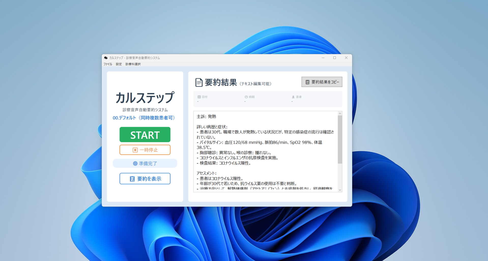
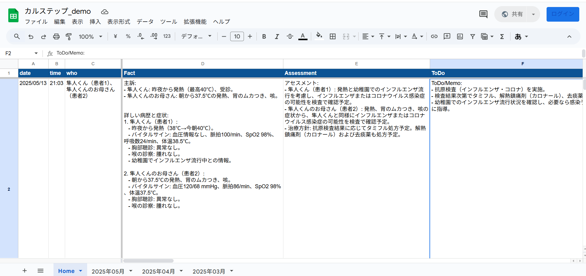

アプリ情報
アプリ名: カルステップ
対象OS: Windows
最新バージョン: v16.2
最終更新日: 2025年8月19日
今すぐ最新版をダウンロード
カルステップ v16.2 (Windows版) をダウンロードZIPファイル形式です。ダウンロード後、展開してご利用ください。
主な機能
- フットスイッチによる直感操作、診察への集中を実現
- 高精度AIによる音声の自動要約、スプレッドシートへの自動出力
- カルテ入力時間を50%以上削減、記録業務の負担を大幅軽減
- 診療スタイルに合わせた柔軟なカスタマイズ

